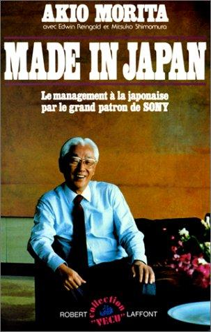

Library › History
Made in Japan: Akio Morita and Sony — Summary & Key Lessons

Two engineers and a broken rice cooker built the company that taught the world to say Sony, and proved market research can't hear the Walkman.
📖 OPEN THE FULL INTERACTIVE BREAKDOWN →🌐 Read it in Hindi, Hinglish, Gujarati, Tamil & 22 more languages — free, with audio.
💡 The Big Idea
Morita (with engineer-partner Masaru Ibuka) founded Tokyo Tsushin Kogyo in 1946 in a bombed-out department store, failed publicly (an automatic rice cooker that burned rice), succeeded with Japan's first tape recorder (sold first to courts, which needed to record proceedings), licensed the transistor from Bell Labs (1953) when everyone else saw only hearing aids, built the world's first pocket transistor radio, fought the 'Made in Japan' junk stigma by renaming the company Sony (from sonus, sound), and in 1979 shipped the Walkman, a product that existed because Morita insisted (market research said nobody wanted a tape player without recording; his insight: people want music everywhere, privately, on the move). The book is the founder's case for product conviction over research, plus the philosophy of Japanese management (lifetime employment, consensus) told from the insider's chair, with the honest seams (the linked case study's Betamax defeat) visible throughout.
🧠 The 8 Key Lessons
Lesson 1: Lead the Public; Don't Ask Them What's Possible
The Walkman
The Walkman shipped against internal research (playback-only tape player? who wants that?) because Morita observed behavior research couldn't ask about: young people carrying music into streets and parks on heavy setups. The famous doctrine: research measures existing desires; vision creates new ones. The discipline applies when your product changes behavior (not when it optimizes existing behavior, where research IS the tool).
📖 Example: Engineers built the prototype by strapping a recorder to Morita's suggestion of headphones; the press mocked a recorder that couldn't record, teenagers made it a generation's symbol, and 'Walkman' became generic like Xerox. Read the full example →
⚡ Do this: Split your roadmap into two lists: 'better version of existing behavior' (use research hard) and 'new behavior' (use conviction and prototypes). Never judge list two by list one's methods.
Lesson 2: Failure at the Scale of a Rice Cooker Is Tuition
The Burned Rice
Sony's first product (an electric rice cooker) cooked uneven rice and flopped; the team's response was iteration and laughter in the memoir, not shame. Early public failures at small scale taught the company specs, users and humility. The lesson: engineer your first failures to be affordable and public, because a company that has never shipped a flop has never learned what shipping costs.
📖 Example: The rice cooker (and the crude electric cushion that followed) burned cash and pride, and the engineering lessons (heating curves, user tolerance) fed directly into the tape recorder's success. Read the full example →
⚡ Do this: Ship one deliberately small, genuinely risky product experiment this quarter. Debrief it in writing: what did users tolerate, what did they refuse, what surprised the engineers?
Lesson 3: A License Can Be the Whole Company
The Transistor Bet
Sony's future was sealed when Morita licensed Bell Labs' transistor (1953) for $25,000, when Western companies saw only hearing-aid applications. Sony's engineers spent years making transistors work at high frequencies (for radios), turning a component license into a product empire. The lesson: technology transfers are option contracts; the value goes to whoever sees the application others dismiss and does the hard engineering to unlock it.
📖 Example: The pocket radio (1957) that followed made the 'Sony' brand name necessary (the company renamed itself for the product), and Japan's electronics ascent traced directly to that licensing decision. Read the full example →
⚡ Do this: Audit one emerging technology in your field: what application does everyone dismiss? Price what a license or early build would cost, versus the market the dismissed application might become.
Lesson 4: Name the Stigma, Then Kill It
Made in Japan Meant Junk
Postwar 'Made in Japan' meant cheap junk, so Sony rebuilt the meaning product by product (quality religion, premium positioning) and renamed the company something pronounceable and warm (sonus/sonny). The lesson: a category stigma is beaten by quality concentration plus identity, not by discounts; every early sale must be flawless because each one is a referendum on the whole origin.
📖 Example: Morita's obsession with retail presentation and service standards (monitoring small things) turned Sony into the exception that rebranded a nation's exports. Read the full example →
⚡ Do this: If your brand carries a stigma (new country, new category, small origin), list the three touchpoints where it dies or lives, and over-invest there until the exception becomes your identity.
Lesson 5: Sell to the Customer Who Needs It Most First
The Courts Buy the Tape Recorder
Sony's tape recorder (1950) wowed everyone and sold to nobody (what would families record?), until they discovered courts needed verbatim records and schools needed language labs: institutional buyers with urgent use-cases paid premium prices and seeded the consumer market. The go-to-market lesson: your first customers are the ones for whom your product is a NECESSITY, find them by pain, not by TAM.
📖 Example: Two years of consumer rejection ended when a demo in a courtroom sold instantly; the court segment funded the iteration until prices dropped and homes followed. Read the full example →
⚡ Do this: List who suffers the pain your product solves urgently enough to pay premium today. Sell there first, at high price, and let that segment fund your path to the mass market.
Lesson 6: Consensus Has a Speed Limit
Ringi and Its Limits
Morita defends Japanese consensus management (ringi, lifetime employment) for loyalty and quality, while admitting its weakness: slowness in fast markets (he contrasts Sony's quick decisions with slower rivals'). The honest synthesis: consensus builds commitment and quality; it loses races that reward speed. Choose your decision system by your market's clock speed, and know where your system's ceiling is.
📖 Example: Sony's consumer hits came from founder-speed decisions (Walkman), while consensus processes handled manufacturing excellence, and Morita explicitly warns consensus fails 'when the market changes monthly'. Read the full example →
⚡ Do this: Classify your decisions by clock speed: slow markets (consensus welcome) versus fast markets (small team, founder accountability, ship in days). Write the split down as policy.
Lesson 7: Design Is a Moral Position
The Sony Look
Sony's products carried a design ethic (honest materials, human interfaces, pride in the object) that Morita describes as respect for the user, not styling. The Walkman's simplicity, the Trinitron's insistence: design was the brand's ethics made visible. The lesson: in categories of specs parity, design ethics is the durable differentiator, and users can feel the difference even if they can't name it.
📖 Example: Competitors matched specs and lost to feel; customers described Sony products as 'cared for', which is what the design ethic produced and advertising never could. Read the full example →
⚡ Do this: Write your product's three design ethics (what you will never fake, always simplify, always protect). Put them in every spec review; veto anything that violates them.
Lesson 8: Superior Tech Loses to Superior Systems
The Betamax Shadow
The memoir tells Sony's triumphs; the era's biggest lesson sits in its shadow: Betamax (superior recording quality) lost the VCR war to VHS (longer recording time, open licensing, studio alliances). Even this book's company could win the engineering and lose the ecosystem. The lesson: when your product lives inside a system (formats, partners, studios), engineering excellence is table stakes; distribution alliances and ecosystem economics decide the war. Our linked case study runs the tape in full.
📖 Example: Consumers chose two-hour recordings over better picture, rental stores chose VHS supply, and every technical virtue of Betamax became trivia; the same company that taught the world Walkman learned the ecosystem lesson the hard way. Read the full example →
⚡ Do this: Map your product's ecosystem (formats, partners, complements) and score your alliances there. If partners' economics favor a rival standard, your roadmap matters less than your wedding invitations.
✅ 5-Step Action Plan
- Split your roadmap by behavior type: research the old, prototype the new.
- Ship one small risky experiment this quarter and debrief it in writing.
- Price one dismissed application of an emerging technology versus its potential market.
- Find the customer for whom your product is a necessity and sell them first at premium.
- Map your ecosystem alliances; where partner economics favor rivals, fix that first.
⚠️ When This Doesn't Work
Morita's memoir (1986) predates Sony's later turbulence and tells the founding decades with founder's pride: Japanese management is presented sympathetically (labor conflicts and supplier pressures get little room), and some anecdotes are polished over retellings. The Betamax defeat (external to the book's arc) is essential context we supply via the linked case study. Read it as the philosophy of product conviction from its most articulate practitioner.
💀 The Graveyard Proves It
📼 Sony Betamax — Better Quality, Total Defeat. Burn: The entire home-video format war. Read the full case study →
💬 Best Quotes from Made in Japan: Akio Morita and Sony
- “Our plan is to lead the public with new products rather than ask them what kind of products they want.”
- “The public does not know what is possible. We do.”
- “Careful monitoring of the thousand small things is what quality actually is.”
Interactive version: mark lessons as read, listen in your language, share quote cards.